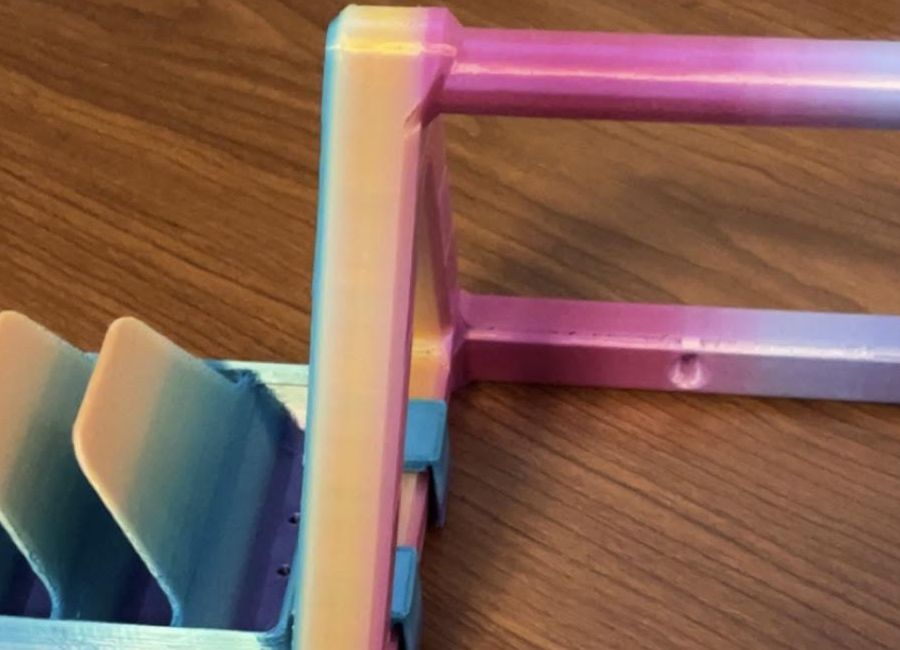
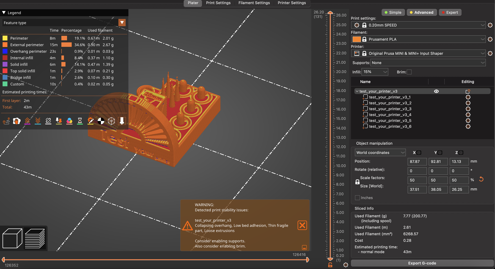
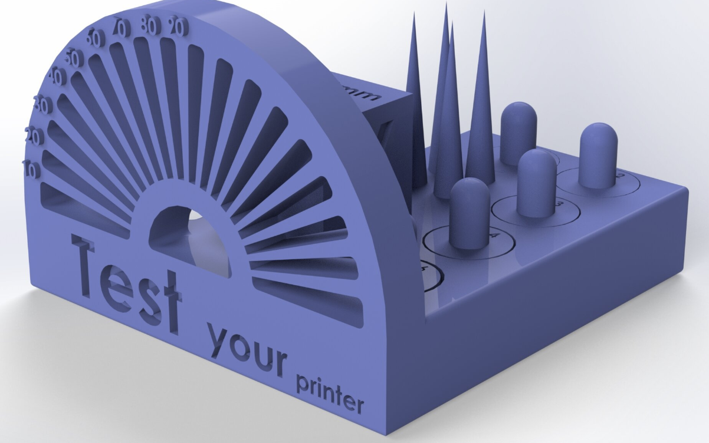
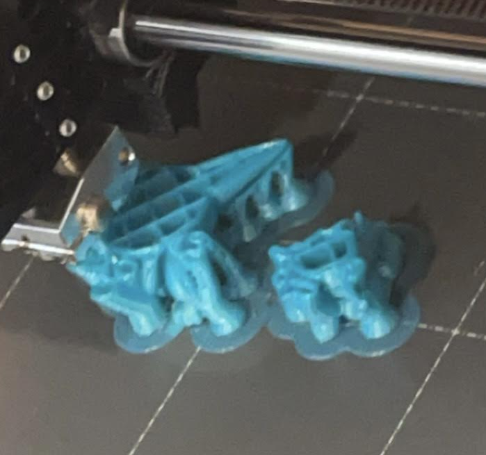
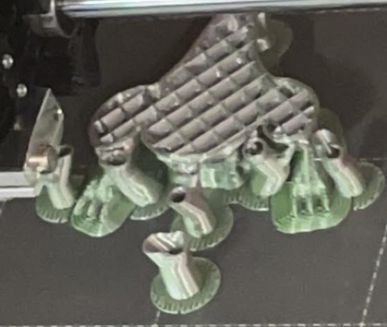
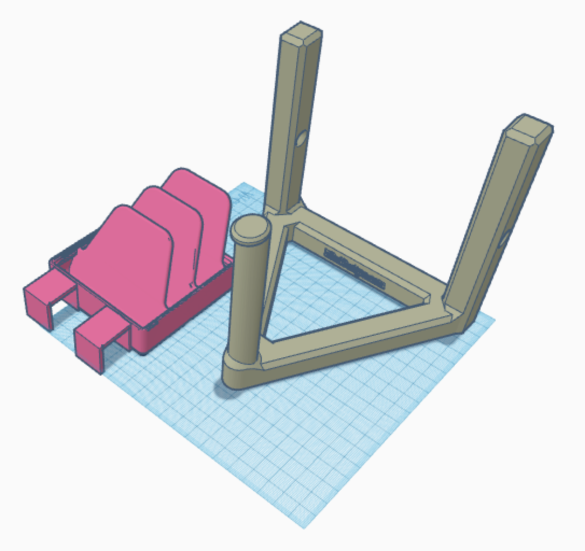
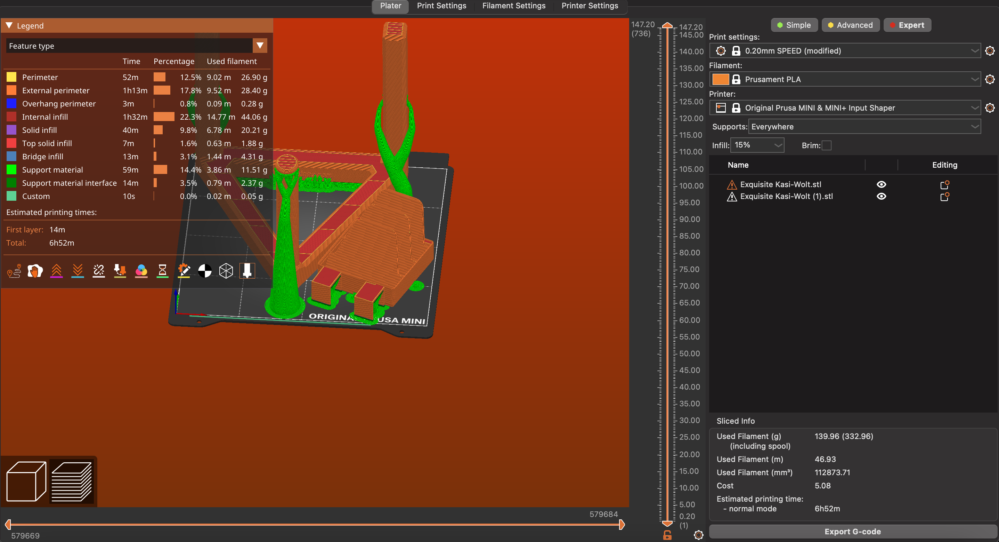
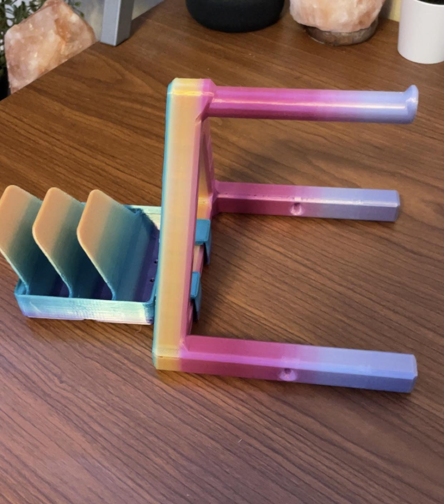
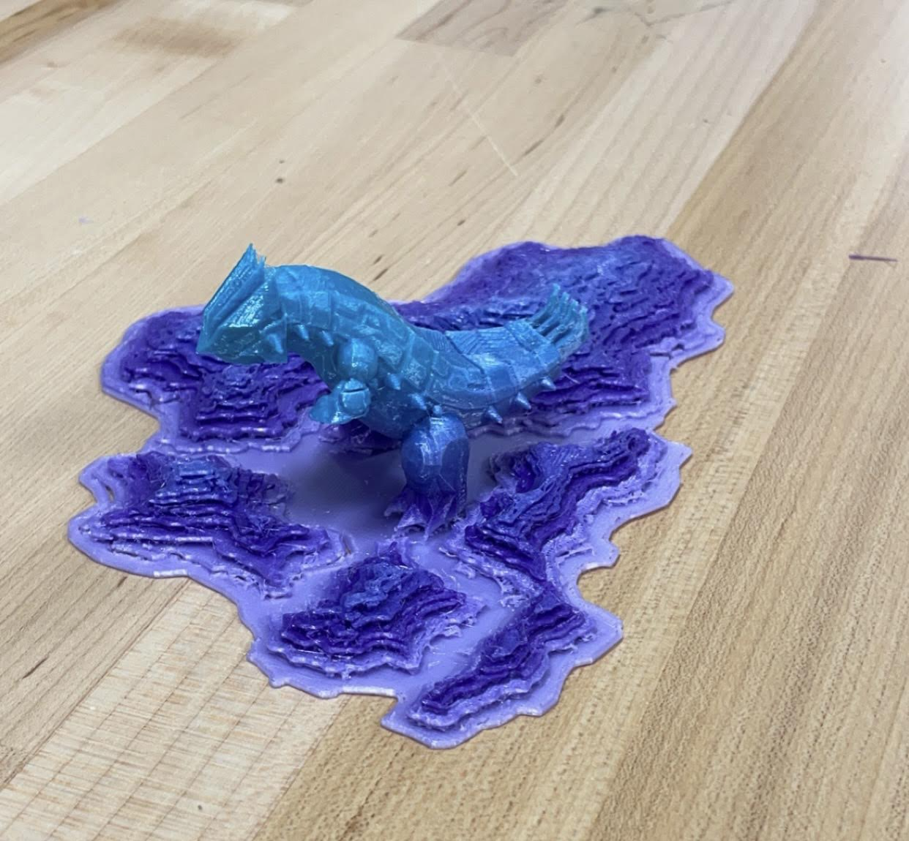

Totodile / Croconaw / Feraligatr (35mm True Scale Pokemon)
by Irnkman is licensed under the Creative Commons - Attribution license.
https://www.thingiverse.com/thing:5529452
Design Project #1
Click images to see project description
Design Project #2

Additional Prints
About
Freelancer is a free bootstrap theme created by Start Bootstrap. The download includes the complete source files including HTML, CSS, and JavaScript as well as optional SASS stylesheets for easy customization.
You can create your own custom avatar for the masthead, change the icon in the dividers, and add your email address to the contact form to make it fully functional!
The first 3-D print attempted was a name tag/keychain model using PLA. The model was packaged as an STL file and opened in the PrusaSlicer software. First, the Prusa MINI + Input Shaper configuration was selected (since these printers are the available hardware) and then the infill percentage was adjusted to 20%. Finally, the STL file was sliced and exported to a USB storage device as G-code. The STL file was then saved as a 3MF file; 3MF files generally take up less storage than STL files and can store adjusted printer settings.
The results of the first print are shown above. The print proceeded smoothly and without issue. The filament color was changed about halfway through the print for the border and text once the base was printed, as was inicated in the G-code file. The skirt appears crooked in the image, but this is because I accidentally bumped it while trying to photograph the results. Oops!
Stress Test #1

My next print was a stress test inteded to push the limits of the Prusa MINI 3-D printer using PLA. I selected a calibration print file from https://www.thingiverse.com/thing:5519406 in 3MF format. Since this file was in 3MF format, many of the print settings were already pre-selected. Despite this, I scaled the size of the model down to 50%. This was for two reasons: to save time and to make the intricate parts of the model more difficult to print.

This was the model of the intended stress test print. It was selected to measure the Prusa MINI printer's ability to print unsupported features, overhangs, and small text.
This was the result of the first stress test print. The overhang section of the model seemingly printed without issue. This is likely because the overhangs were supported by many beams at different angles. However, both the cones/pillars and text experienced printing issues. Three of the four cones had snapped at the top and there was a significant amount of stringing between them. The other pillars had also snapped out of place and much of the text was illegible. These observations suggest that intricate details such as these should be printed at a larger scale to avoid error.
Stress Test #2
After the first stress test, I had extra time and decided to complete a second one. I found a set of three models of the Totodile Pokémon evolution line from https://www.thingiverse.com/thing:5529452. I selected this model because there were many small details and overhangs that required supports, which I had hoped would really challenge the printer. Before I could begin printing, I had to convert the downloaded STL file into a 3MF file because the STL file was too large.
The first print attempted had failed tremendously within the first twenty minutes of the process. Some of the supports failed to anchor properly. Back to the drawing board!


Originally, all three models were being printed on a single printer. It seemed that the models were to close together and interfering with each other. Because of this I decided to split the models into two seperate files, with the two smaller models on one printer and the larger model on another printer.
Aside from a few minor issues, the prints were successful! The supports were difficult to remove completely so some additional post-processing may be needed.
TinkerCAD Print: Spool + Attachment
For my first additive design, I wanted to create a filament spool holder that also had a compartment to hold snips. The aim of this design was to save time during printing and make it easier to swap out filament colors. I began by drawing a rough sketch of what the design would look like with both components combined. With this design, the biggest challenege I anticipated was effectively printing these designs within the bounds of the printing bed.

Next I selected two models, one for the spool holder and one for the snip holder, and imported them to TinkerCAD. I created two brackets on the snip holder using rectangular prisms and joined them together as a single object. The purpose of the brackets was to allow the snip holder to attach and detach from the spool holder frame. All of this proceeded successfully, but as can be seen in the picture above, the two models did not fully fit within the print bed. The two models were found here:
https://thangs.com/designer/MihaiDesigns/3d-model/Universal%20Spool%20Holder%2C%20Fully%203D%20Printed-40096
https://thangs.com/designer/LengAwaits/3d-model/Gridfinity%202x2%20Three-Bay%20Nipper%2C%20Stripper%2C%20Plier%20Rack-67528

After, I exported the model to PrusaSlicer as an STL file. In order to fit both models on the print bed, I had to rotate the snip holder by 45 degrees. Finally, I generated organic supports to stabilize the models as they printed and exported the files as G-code to begin the print. The print lasted around 7 hours with much of the time allocated towards printing the supports and infill.

This was the result of the print. To my surprise, it had turned out exactly as I had expected and it was able to hold both a filament spool and snips. If I had more time, I would've used my newfound TinkerCAD knowledge to design a more nuanced bracket system that could secure the snip holder more strongly to the spool holder. I also learned how capable PrusaMINI printers are at printing large objects.
Fusion360 Print: Terrain + Figure
For my second design, I wanted to combine a figure model and place it on a terrain model. The goal of this was not only to make a cooler design, but to also stablize the figure so that it could stand upright without falling over. I drew a rough sketch of two possible designs: one with a humanoid figure on a castle wall and one with a reptilian figure among a mountain range. The two biggest challenges I anticipated were properly lining up the figure with the terrain in Fusion360 and printing the terrain effectively.
I had decided on the mountain design because I thought it would be cooler and more challenging to print. I found STL files for a model of a mountain range and a model of the Pokémon Groudon and imported them into Fusion360 as polygon meshes. Next, I used Fusion360 to convert the meshes into 3D models and joined the two models together into a single object. The two models were found here:
https://www.thingiverse.com/thing:2277938
https://www.thingiverse.com/thing:2016248/files
The final model was then exported as a new STL file and opened in PrusaSlicer. I had thought that the model would be too large, but at 100% scale the model fit the print bed perfectly. I chose to generate organic supports to stabilize the Groudon model, but they stemmed directly from the moutain terrain and I was worried that this might affect the print quality. Despite this, I couldn't find another time efficient way to proceed and decided to export the model into G-code anyway. The printed lasted for about 6 hours.

This was the result of the print. While it had exceeded my expectations, there were still a few issues. The supports that were connected to the hands were stronger than I had anticipated and they ended up snapping off part of each arm when they were removed. However, my goals of overall looking cooler and ensuring that the figure stood upright were both achieved. If I had more time, I would've spent longer in Fusion360 finding a more appropriate location to place the figure and I would've spent more time in PrusaSlicer to generate thinner support structures. This print had provided me with valuable knowledge and I will adjust my approach in the future.